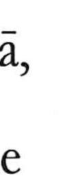

Explanation
家 combines 宀, a roof, with an animal form now written 豕, pig. In the early bronze forms the animal is identified as a slain dog offered at the building's foundation. Burying the victim pacified the ground on which the structure stood.
The building was an ancestral shrine. Oracle-bone texts can refer to the 家 of a named ancestor, placing the word in the setting of a lineage's sacred centre. The offering and the shrine establish the protected place around which people live.
From that centre come a dwelling, the people inhabiting it, and the family or bloodline. 家 can then refer more narrowly to a husband or wife, to a hereditary house, or to a person's own established tradition or school. The received 豕 preserves the animal component after its shape has changed.